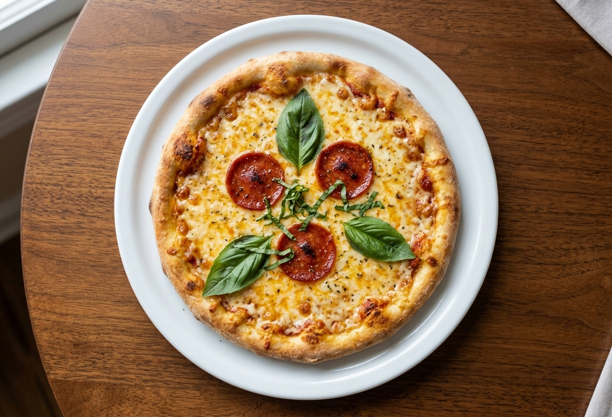

Summer Tomato Tart
A crisp tart for warm evenings, ready in under an hour.

| Prep | Cook | Serves |
|---|---|---|
| 20 min | 35 min | 4 |
Ingredients
- 1 sheet puff pastry
- 4 ripe tomatoes
- 150 g soft goat's cheese
- 2 tbsp green pesto
- 1 egg, beaten
- Small bunch of basil
- 1 tbsp olive oil
- Salt and pepper
Method
- Heat the oven to 200°C and line a tray with baking paper.
- Score a border 2 cm from the pastry edge and spread pesto inside it.
- Crumble over the cheese and lay the sliced tomatoes on top.
- Brush the border with egg and bake for 30–35 minutes.
- Drizzle with oil, scatter basil and season before serving.